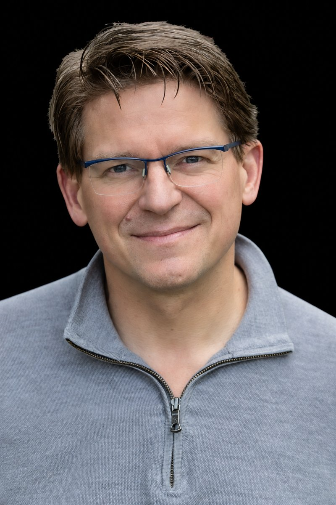

Why now.
This is a moment of real momentum against ALS. In 2023 the FDA approved the first treatment aimed at a genetic cause of the disease. Platform trials now test several potential treatments at once, and advances in biology, biomarkers and new kinds of therapies are opening paths that didn’t exist a few years ago.
At the same time, people living with ALS and their families need help today: information and support, caregiving, assistive technology and mobility. Dedicated organizations across the country meet these needs every day, and every one of them needs more funding to do it.
ALS Catalyst Foundation believes thoughtfully directed investment can do both: speed progress toward effective treatments and cures, and meet the urgent needs of the ALS community now.

Shawn Sarbacker
Shawn is living with ALS. He takes part in clinical trials and research, and he is active in ALS advocacy and fundraising.
He founded ALS Catalyst Foundation to help speed the most promising work against ALS and to bring people together around it, starting with Dancing to Beat ALS. At the gala, Shawn and Andrea Sarbacker will dance as the Host Team for ALS Catalyst.
A new way to rally against ALS.
Dancing to Beat ALS turns fundraising into a celebration people want to join, share and come back to.
A fresh kind of fundraiser
Fun, uplifting and hugely popular, a dance competition stands apart from the usual gala, golf outing or race, and brings new energy and new supporters to the cause.
Real star power
Our founder’s close friend Allen Genkin, who competed on Dancing with the Stars: The Next Pro, brings instant credibility and excitement.
Many charities, one stage
ALS charities large and small run their own campaigns, receive gifts directly and keep their donor relationships, giving each one a powerful new source of funds and supporters.
The whole community together
People living with ALS, scientists and clinicians, care providers, national and grassroots organizations, and companies share one stage.
Made for sharing
Dance is built for social media and streaming, carrying awareness and engagement far beyond the ballroom.
Built to grow
Our hope is a flagship annual event that inspires regional and local events, amplifying the impact all year long.
Dancing to Beat ALS is not affiliated with or endorsed by Dancing with the Stars.
Our mission
To advance the cure, care and quality of life for people living with ALS.
ALS Catalyst Foundation presents Dancing to Beat ALS, where ALS charities raise money directly for their own work, and will invest in a focused set of the most promising opportunities against ALS.
Fund what matters most
Over time, we will make grants to a selective set of opportunities across research, care and technology, where funding can make the biggest difference.
Bring people together
Dancing to Beat ALS, our first program, brings the ALS community together and gives charities large and small a national platform to raise money directly for their own work.
Report openly
We will publish the organizations we fund and explain where donations go.